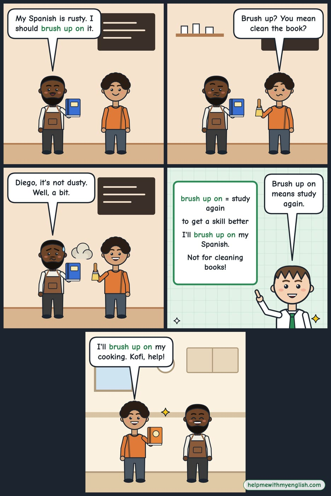

brush up on
To study something again to improve a skill you already have.
I need to brush up on my grammar before the exam.
Tip: Use 'brush up on' + the skill or subject (brush up on my Spanish); it suggests you already know something and are refreshing it, not learning from zero.
Hear it in conversation
Workbook
1. What does it mean?
In this conversation, what does 'brush up on' mean?
2. Fill the gap
Before my trip to Tokyo, I want to my Japanese, because I haven't spoken it for years.
3. Choose the best reply
Olena: I'm interviewing for a new job on Friday, and I haven't used a spreadsheet in ages.
4. Your turn: speak
Is there a skill you've let slip that you would like to improve again? Tell me about it.
Show an example answer
I used to play the piano quite well, but I haven't touched it since I started working full time. I'd like to brush up on it, maybe by practising twenty minutes a day. It would be a nice way to relax in the evenings.
Answer key: brush up on
- 1. B. Study something again to get better at a skill you already have
- 2. brush up on
- 3. B. You should brush up on it tonight, then. A few practice exercises will help.
- 4. Example: I used to play the piano quite well, but I haven't touched it since I started working full time. I'd like to brush up on it, maybe by practising twenty minutes a day. It would be a nice way to relax in the evenings.
See it in a comic
